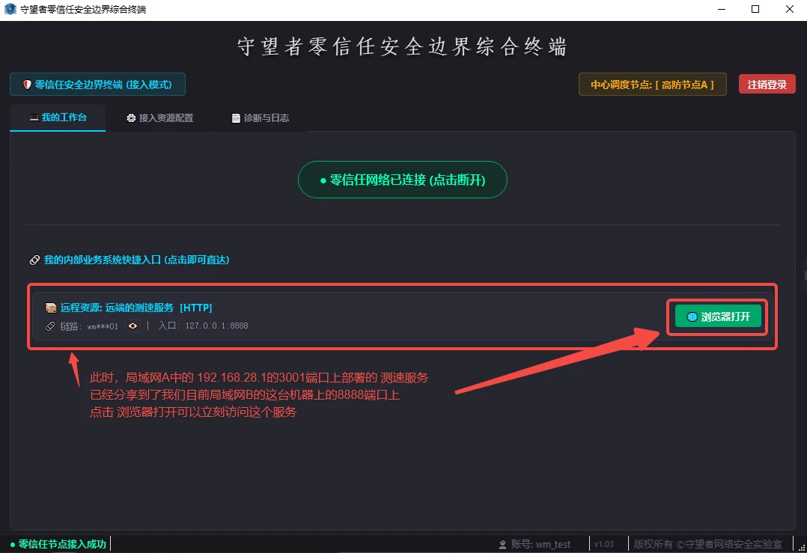

域名绑定
管理本机 hosts 中的域名与 IPv4 映射，支持按需解绑。
Windows 客户端 v1.03 正式发布。下载完整 ZIP 软件包，包含零信任终端、守望者本机网络助手及配套文档。
统一管理业务资源发布与接入。通过资源 Link ID 和通信口令建立访问规则，在本地生成业务访问入口。
软件包：WMSafe_Client_v1.03.zip · GitHub Releases。压缩包包含零信任终端、本机网络助手及配套文档。

从 GitHub Releases 下载官方 ZIP 压缩包。
按发行包内的说明解压、启动客户端。所需组件以实际发行包说明为准。
使用管理员分配的终端账号登录，根据使用说明书配置资源发布或接入。
请通过本站提供的 GitHub Releases 链接获取软件。下载后建议检查压缩包文件名、版本及发行说明，并使用安全软件扫描后运行。
用于 Windows 本地域名绑定、辅助 IPv4 地址管理与配置状态查看。仅在业务有相关需求时使用。
管理本机 hosts 中的域名与 IPv4 映射，支持按需解绑。
根据业务需要为指定网卡添加或删除辅助 IPv4 地址。
查看配置与操作记录，便于排查本机网络设置。